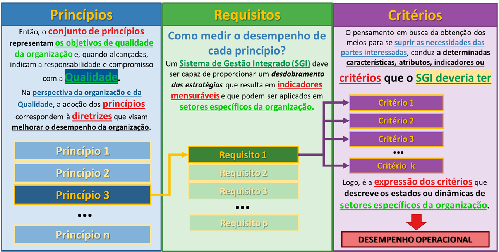

graph TD
A[Operação / PCO] --> D((PRODUÇÃO))
B[Manutenção / PCM] --> D
C[Engenharia / Ativos] --> D
style D fill:#e67e22,stroke:#333,stroke-width:4px,color:#fff
style A fill:#3498db,stroke:#333,color:#fff
style B fill:#3498db,stroke:#333,color:#fff
style C fill:#3498db,stroke:#333,color:#fff
3 O Desdobramento Estratégico e a Gestão da Qualidade
Dica🎯 Objetivos deste Capítulo
- Compreender a transição entre o Planejamento e o Controle da Qualidade.
- Diferenciar Eficácia e Eficiência utilizando a modelagem ARM.
- Entender a aplicação prática do ciclo SDCA na rotina da mineração.
No Capítulo 1, estabelecemos a pedra angular da nossa modelagem:
Nota📌 DEFINIÇÃO NORMATIVA
Qualidade (3.6.2): Grau em que o conjunto de características (3.10.1) inerentes de um objeto (3.6.1) satisfaz requisitos (3.6.4).
No entanto, a qualidade por si só é um estado passivo. Para que ela seja alcançada de forma repetível em uma operação industrial, ela precisa ser ativamente direcionada. É neste ponto que introduzimos os conceitos de controle corporativo:
Nota📌 DEFINIÇÃO NORMATIVA
- Gestão (3.3.3): Atividades controladas para dirigir e controlar uma organização (3.2.1).
- Organização (3.2.1): Pessoa ou grupo de pessoas com suas próprias funções com responsabilidades, autoridades e relações para alcançar seus objetivos (3.7.1).
Quando fundimos esses elementos — o estado desejado (Qualidade) com a ação de direcionamento (Gestão) sobre uma empresa (Organização) —, nasce a premissa central do nosso sistema:
Nota📌 DEFINIÇÃO NORMATIVA
Gestão da Qualidade (3.3.4): Gestão (3.3.3) que diz respeito à qualidade (3.6.2).
- NOTA 1: A Gestão da qualidade pode incluir o estabelecimento de políticas da qualidade (3.5.9), objetivos da qualidade (3.7.2) e processos (3.4.1). Os objetivos da qualidade podem ser alcançados por meio do planejamento da qualidade (3.3.5), da garantia da qualidade (3.3.6), do controle da qualidade (3.3.7) e da melhoria da qualidade (3.3.8).
A NOTA 1 da Gestão da Qualidade é o verdadeiro “mapa tático” da engenharia de produção. Para transformar essa teoria em prática, desmembraremos esta nota passo a passo, mostrando como ela puxa toda a estrutura do nosso livro.
3.1 A Estrutura Diretiva: Políticas, Visão e Missão
A Nota 1 da definição de Gestão da Qualidade indica que o sistema é puxado, em primeiro lugar, pelo estabelecimento de Políticas. A política não nasce do vazio; ela é orientada pelas aspirações máximas da Alta Direção e serve como a “Constituição” do sistema produtivo.
Nota📌 DEFINIÇÃO NORMATIVA
- Visão (3.5.10): Aspiração do que uma organização (3.2.1) gostaria de se tornar, como expresso pela Alta Direção (3.1.1).
- Missão (3.5.11): Propósito da existência da organização (3.2.1).
- Política da Qualidade (3.5.9): Intenções e diretrizes globais de uma organização relativas à qualidade, formalmente expressas pela Alta Direção.
- NOTA 1: A política da qualidade geralmente é consistente com a política geral da organização, pode ser alinhada com a visão e a missão, e provê uma estrutura para se estabelecerem os objetivos da qualidade.
A Política da Qualidade deixou de ser uma formalidade burocrática para se tornar um pilar estratégico. Ela deve refletir o compromisso da empresa com a melhoria contínua e o cumprimento de normas globais (como a ISO 9001). Para ser eficaz, deve obedecer a quatro princípios fundamentais:
- Foco no Cliente: Garantir que produtos e processos atendam às expectativas de uso e contrato.
- Liderança e Comprometimento: A Alta Direção deve liderar pelo exemplo, garantindo que a política seja compreendida em todos os níveis.
- Decisão Baseada em Evidências: A gestão deve ser guiada por dados reais, minimizando riscos operacionais.
- Melhoria Contínua: A política deve promover a evolução constante através do ciclo PDCA (Plan-Do-Check-Act).
3.1.1 Roteiro de Implementação da Política
Para transformar a Política da Qualidade em prática operacional, a engenharia deve seguir um plano de ação metódico:
- Alinhamento Estratégico: A política deve derivar diretamente da Missão e Visão. Se a estratégia é “baixo custo”, a política foca em redução de desperdício; se é “inovação”, foca em flexibilidade.
- Diagnóstico Inicial: Antes de escrever a política, utiliza-se ferramentas como a análise FMEA (Análise de Modos e Efeitos de Falha) para identificar as fragilidades atuais dos processos e onde a política precisa ser mais rígida.
- Formalização e Disseminação: A redação deve ser clara. Após aprovada, deve ser treinada exaustivamente para que cada colaborador saiba como sua função impacta a qualidade final.
- Monitoramento: A política deve ser auditável e verificada através de auditorias internas e da análise crítica de indicadores.
3.1.2 Estudo de Caso: O Arcabouço Estratégico na Mineração
Para materializar essa arquitetura teórica, podemos analisar o direcionamento estratégico de uma das maiores produtoras globais de minério de ferro, a Vale1. A empresa estrutura sua identidade corporativa substituindo os termos clássicos por nomenclaturas orientadas à ação:

- Propósito (A Missão): “Existimos para melhorar a vida e transformar o futuro. Juntos.”
- Ambições (A Visão): A organização busca ser reconhecida pela sociedade como referência em segurança, a melhor operadora e mais confiável, além de líder em mineração sustentável.
- Valores e Comportamentos: A base cultural exige premissas inegociáveis, como “A vida em primeiro lugar” e a “Obsessão por segurança e gestão de riscos”.
Essa estrutura filosófica é operacionalizada por meio de alavancas, como a Inovação e o VPS (Sistema de Gestão Vale). A partir daí, a política de qualidade desdobra-se em pilares estratégicos de execução para a “Vale do futuro”:
- Portfólio Superior: Foco no fornecimento de minério de ferro de alta flexibilidade e qualidade, com rápida adaptação às necessidades dos clientes e fornecimento de materiais para a transição energética.
- Orientada para Desempenho: Busca por excelência operacional, confiabilidade das operações, integridade dos ativos e avanços na mineração circular.
- Parceira Confiável e Sustentável: Adoção de uma abordagem de “operador sustentável”, com metas agressivas (redução de 16% nas emissões até 2030) e gestão rigorosa de barragens.
3.1.2.1 A Governança como Blindagem da Política
Uma política de qualidade só sobrevive se houver uma governança que force o seu cumprimento. Na Vale, para garantir que a “Obsessão por segurança” não seja atropelada pela pressão por volume de produção, a organização atrela 25% da remuneração variável de longo prazo de seus executivos diretamente a metas ESG. Além disso, as áreas de Saúde, Segurança, Geotecnia e Compliance não possuem indicadores de resultados financeiros ou de produção em seus painéis, garantindo dedicação integral à mitigação de riscos.
3.1.3 A Engenharia do Documento: Como Elaborar uma Política da Qualidade
Enquanto a Visão e a Missão são declarações filosóficas, a Política da Qualidade é o documento formal. Para ser válido em auditoria (ISO 9001), ele deve conter quatro promessas fundamentais:
Nota📝 ELEMENTOS ESSENCIAIS DA POLÍTICA (ISO 9001)
- Foco no Cliente: Compromisso explícito em satisfazer as necessidades de quem recebe o produto.
- Melhoria Contínua: Promessa formal de evolução constante do Sistema de Gestão da Qualidade (SGQ).
- Atendimento a Requisitos: Comprometimento em cumprir leis, normas técnicas e regulamentações.
- Alinhamento Estratégico: Garantia de que a política apoia o modelo de negócio da empresa.
3.1.3.1 A Especificidade do Setor Mineral (SGI / SSMA)
Na mineração, a qualidade do produto é indissociável de como ele foi extraído. Por isso, a Política da Qualidade é integrada a diretrizes de Segurança, Saúde e Meio Ambiente, formando o Sistema de Gestão Integrado (SGI) ou SSMA. O texto deve englobar: * Segurança e Saúde: Integridade física e gestão de riscos geotécnicos. * Eficiência de Processos: Redução da variabilidade e otimização da lavra. * Responsabilidade Socioambiental: Respeito às comunidades e recuperação de áreas.
3.1.3.2 Exemplos Práticos de Aplicação
Exemplo 3.1 (Foco Operacional e Integrado (Perfil de Agregados / Médio Porte)) “A [Nome da Mineração], fornecedora de Areia e Agregados para construção civil, compromete-se em satisfazer as expectativas dos seus clientes, produzindo agregados que atendam rigorosamente às especificações técnicas acordadas. Buscamos melhorar continuamente nossos processos produtivos e nosso Sistema de Gestão, proporcionando o desenvolvimento constante de nossos colaboradores, zelando pelo meio ambiente e garantindo a higiene e a segurança total do nosso ambiente de trabalho.”
Exemplo 3.2 (Foco em Excelência e Stakeholders (Classe Mundial / Commodities Globais)) “Nossa organização compromete-se com a excelência operacional através de processos seguros e eficientes, garantindo o foco absoluto nas especificações do cliente e a melhoria contínua de nossa performance metalúrgica. Buscamos alcançar níveis de classe mundial em segurança e otimização de custos, gerenciando riscos de forma proativa, garantindo a conformidade legal ambiental e mantendo um diálogo aberto e transparente com todas as partes interessadas e comunidades.”
3.2 A Fronteira da Execução: Processos
Voltando à Nota 1 da Gestão da Qualidade, o segundo elemento estrutural puxado pela norma é o Processo.
Nota📌 DEFINIÇÃO NORMATIVA
Processo (3.4.1): Conjunto de atividades inter-relacionadas ou interativas que utilizam entradas para entregar um resultado pretendido.
- NOTA 1: O “resultado pretendido” do processo é chamado de saída (3.7.5), produto (3.7.6) ou serviço (3.7.7), dependendo do contexto da referência.
- NOTA 2: As entradas para um processo são geralmente saídas de outros processos e as saídas de um processo são geralmente as entradas para outros processos.
- NOTA 3: Dois ou mais processos inter-relacionados ou que interagem em série também podem ser referidos como processos.
- NOTA 4: Processos em uma organização (3.2.1) são geralmente planejados e realizados sob condições controladas para agregar valor.
- NOTA 5: Um processo para o qual não for possível validar prontamente ou economicamente a conformidade (3.6.11) da saída é frequentemente chamado de “processo especial”.
Na engenharia aplicada à mineração, é fundamental fazermos uma distinção prática baseada na Nota 1 deste item:
- Qualidade do Produto (A Saída): Focada na adequação ao uso e no atendimento das especificações do cliente externo. Na exploração mineral (como a de minério de ferro a céu aberto), o produto precisa passar pelo beneficiamento — etapas de cominuição, classificação, concentração e separação sólido/líquido — até atingir a constituição física exigida. Foi para quantificar esta qualidade de saída que utilizamos a Modelagem Analítica (ARM) no Capítulo 2.
- Qualidade do Processo (A Execução): Focada na eficiência interna. A mineração é caracterizada pelo efeito de alto volume com baixa variedade de produtos, configurando uma produção contínua de arranjo físico por produto. Para este cenário, o principal fator “ganhador de pedido” é o aspecto econômico (o menor custo unitário e o lead-time).
Para garantir essa dupla qualidade (do produto e do processo), a execução exige uma forte integração horizontal. Na indústria mineral, a Produção não é um departamento isolado, mas a soma sinérgica e inseparável de três forças:
Produção = Operação + Manutenção + Engenharia
Traduzindo essa equação para a arquitetura de gestão, o Planejamento e Controle da Produção (PCP) atua como o grande guarda-chuva integrador que consolida: 1. O Planejamento e Controle da Operação (PCO): Focado no cumprimento das metas de volume, taxa de alimentação e qualidade do produto final. 2. A Programação e Controle da Manutenção (PCM): Focada em garantir a confiabilidade operacional e a disponibilidade física imediata dos equipamentos. 3. A Engenharia / Gestão de Ativos: Focada na maximização do ciclo de vida das máquinas, análise de falhas crônicas e melhoria contínua do projeto.
Quando essa integração de processos (PCO + PCM + Engenharia) falha, surgem anomalias corporativas que destroem o valor agregado (Nota 4). Exemplos clássicos incluem a falta de acurácia de estoques (divergência entre o saldo físico nas pilhas e o contábil) e falhas de compliance na expedição e logística (divergências de peso nas balanças de transporte multimodal).
Para blindar a operação contra essas perdas, os processos de negócio precisam compor um Sistema de Gestão Integrado (SGI). Este sistema deve disseminar a estratégia em todos os níveis, incorporando não apenas metas financeiras, mas também os Indicadores de Sustentabilidade (Triple Bottom Line - TBL), garantindo que a eficiência do processo não resulte em degradação ambiental ou riscos sociais.
3.3 A Consolidação: O Sistema de Gestão da Qualidade (SGQ)
Para que as Políticas e os Processos funcionem de forma coordenada, eles não podem operar soltos na fábrica. Eles precisam ser encapsulados e controlados.
Nota📌 DEFINIÇÃO NORMATIVA
- Sistema (3.5.1): Conjunto de elementos inter-relacionados ou interativos.
- Sistema de Gestão (3.5.3): Atividades controladas para dirigir e controlar uma organização para estabelecer políticas, objetivos e processos para alcançar esses objetivos.
- Sistema de Gestão da Qualidade - SGQ (3.5.4): Parte de um sistema de gestão com relação à qualidade.
- Implementação de SGQ (3.4.3): Processo de estabelecimento, documentação, implementação, manutenção e melhoria contínua do sistema de gestão da qualidade.
A função primária do SGQ é garantir a conformidade dos produtos e processos por meio de um conjunto de regras, recursos e procedimentos documentados (como a ISO 9001). Ele estabiliza o que já existe, garantindo que o cliente não receba minério fora de especificação.
3.3.1 A Evolução da Maturidade: SGI, TQM e MEG
No entanto, a Gestão da Qualidade não é um fim em si mesma, mas uma jornada de maturidade que extrapola os limites do SGQ. O desempenho organizacional contemporâneo é multidimensional. Uma mineradora precisa entregar a meta de produção (Qualidade), mas não pode fazer isso causando acidentes (Segurança) ou poluindo rios (Meio Ambiente).
Para compreender essa evolução, alinhamos os diferentes “guarda-chuvas” gerenciais que a empresa adota na sua busca pela excelência:
- Sistema de Gestão Integrado (SGI): Incorpora outras dimensões normativas e de sustentabilidade ao SGQ. Ele transforma políticas de múltiplas disciplinas (Triple Bottom Line - econômico, social e ambiental) em requisitos e indicadores operacionais unificados para o chão de fábrica.
- Gestão da Qualidade Total (TQM): Enquanto o SGI fornece “regras”, o TQM exige uma mudança de cultura. Iniciado no Japão (como CWQC) e adaptado no Ocidente, estabelece que a qualidade não é papel exclusivo da engenharia, mas um compromisso de todos os funcionários. Enfatiza a melhoria contínua, o redesenho de processos e a medição constante de resultados.
- Modelo de Excelência da Gestão (MEG): É o estado da arte. Gerido no Brasil pela Fundação Nacional da Qualidade (FNQ), não é uma norma prescritiva, mas um referencial de classe mundial. Inspirado no ciclo PDCL (Plan, Do, Check, Learn), estimula o alinhamento de toda a organização (Fundamentos \(\rightarrow\) Temas \(\rightarrow\) Processos \(\rightarrow\) Ferramentas) para gerar resultados harmônicos na cadeia de valor para todas as partes interessadas.
3.4 O Desdobramento Estratégico: Objetivos da Qualidade
Com a Política definida, os Processos mapeados e o modelo de maturidade estabelecido, chegamos ao terceiro elemento puxado pela definição normativa: os Objetivos. Para que a excelência não seja apenas um quadro na parede, a estratégia precisa virar um alvo inquestionável.
Nota📌 DEFINIÇÃO NORMATIVA
Objetivos da Qualidade (3.7.2): Objetivos (3.7.1) com relação à qualidade (3.6.2). * NOTA 1: Um objetivo pode ser estratégico, tático ou operacional. * NOTA 2: Objetivos podem se relacionar a diferentes disciplinas (como finanças, saúde e segurança e metas ambientais) e podem se referir a diferentes níveis (como estratégico, da organização, projeto, produto e processos). * NOTA 3: Um objetivo pode ser expresso de outras formas, como resultado pretendido, propósito, critério operacional, finalidade, meta ou alvo. * NOTA 4: No contexto da Gestão da Qualidade, objetivos da qualidade são estabelecidos pela organização, coerentemente com a política da qualidade, para alcançar resultados específicos.
Os objetivos são a tradução tangível da Política. Se a Política diz “focar na satisfação do cliente”, o Objetivo diz “Reduzir o número de reclamações em 20% até dezembro”. Para que um objetivo de engenharia seja válido, ele deve obrigatoriamente seguir a metodologia SMART:
- Específico (Specific): Claro e sem ambiguidade.
- Mensurável (Measurable): Quantificável através de KPIs.
- Alcançável (Achievable): Realista dentro da capacidade técnica instalada.
- Relevante (Relevant): Alinhado com a estratégia do negócio.
- Temporal (Time-bound): Com prazo definido.
3.4.1 A Medição dos Objetivos
Definir a meta não é suficiente; é fundamental mensurá-la para avaliar o desempenho. Na mineração, essa medição ocorre através de:
- KPIs (Indicadores Chave de Desempenho): Monitoramento contínuo de variáveis críticas (ex: taxa de produtos defeituosos, disponibilidade física, teor de contaminantes).
- Auditorias: Revisões periódicas para validar se os processos estão alinhados aos objetivos.
- Checklists e Verificações: Ferramentas de campo para coleta de dados padronizada, garantindo que a informação que chega à gestão seja confiável.
É aqui que a teoria normativa se funde com o Gerenciamento pelas Diretrizes (GPD). Como a Nota 1 deixa claro, um objetivo precisa ser desdobrado: o Diretor foca no lucro anual (Estratégico), o Gerente foca na disponibilidade física da frota (Tático), e o Supervisor atua na redução do tempo de fila de caminhões (Operacional). O GPD garante que todos estejam trabalhando para o mesmo resultado.
Para ilustrar a importância de compreender corretamente esse desdobramento e evitar a miopia gerencial, considere o seguinte diálogo hipotético entre um engenheiro e um gerente:
Engenheiro: “Nosso maior problema hoje é a quebra frequente das correias.” Gerente: “A sua missão é ter muitas correias rodando?” Engenheiro: “Não, meu objetivo é alimentar a planta com minério britado.” Gerente: “Qual é a taxa exigida?” Engenheiro: “4.500 toneladas por hora.” Gerente: “E qual é o nosso volume atual?” Engenheiro: “3.800 toneladas por hora.” Gerente: “Entende a diferença? Seu problema não é a correia. Seu problema é um déficit de 700 t/h. A correia rasgada é apenas uma causa. Foque no resultado e resolva o gap.”
Importante🎯 A REGRA DE OURO DA GESTÃO
Os problemas (desvios nos Objetivos da Qualidade) residem sempre nos FINS (nos resultados não alcançados) e nunca nos MEIOS (processos, máquinas ou recursos). A falha da máquina é a causa; o problema corporativo é o gap entre o desempenho atual e a meta.
3.4.2 A Estrutura Prática dos Objetivos na Mineração
Na indústria mineral, os indicadores de desempenho (KPIs) costumam ser divididos em quatro pilares fundamentais:
3.4.2.1 1. Foco no Produto e Processo (A Eficiência)
- Redução de Variabilidade: Manter o teor médio do minério útil dentro de uma margem de erro estatística rigorosa.
- Aproveitamento de Lavra: Aumentar em 5% a recuperação de massa no beneficiamento.
- Disponibilidade Física: Manter a disponibilidade das máquinas de carga e transporte acima de 85%.
3.4.2.2 2. Foco no Cliente e Mercado (A Eficácia)
- Índice de Satisfação (NPS): Alcançar nota mínima de 8,5 nas pesquisas com compradores.
- Conformidade de Embarque: Garantir que 100% dos lotes estejam dentro das especificações técnicas.
- Prazos de Entrega: Reduzir em 10% o tempo médio de lead time da extração ao embarque.
3.4.2.3 3. Foco em Segurança e Pessoas (O Pilar Crítico)
- Segurança Operacional: Reduzir a Taxa de Frequência de Acidentes (TF) para a meta de Zero Dano.
- Capacitação Técnica: Garantir 100% de conclusão no plano de treinamento de reciclagem.
- Retenção de Talentos: Manter o turnover de especialistas abaixo de 8% ao ano.
3.4.3 O Painel de Gestão e o Ritual da Rotina
Para organizar essas frentes, a organização compila os indicadores em um Painel de Gestão (ou Dashboard).
A Tabela 3.1 ilustra um recorte prático desse monitoramento:
| Objetivo da Qualidade Estratégico | Indicador de Controle (KPI) | Meta de Desempenho | Frequência de Análise |
|---|---|---|---|
| Garantir a pureza do minério | % de impurezas (ex: Sílica/Alumina) | \(\le \mathbf{2,0\%}\) | Diária |
| Reduzir custos operacionais | Custo unitário por tonelada extraída | \(\le \mathbf{15,00} \text{ USD/t}\) | Mensal |
| Fomentar a melhoria contínua | Nº de inovações/melhorias implementadas | 2 por trimestre | Trimestral |
Dica💡 DICA DE ESPECIALISTA: A COMUNICAÇÃO DO OBJETIVO
Na mineração, o objetivo não pode ficar restrito aos painéis da gerência. Os objetivos da qualidade devem ser discutidos nos Diálogos Diários de Segurança e Qualidade (DDSQ) antes do início de cada turno. Esse ritual é fundamental para que o operador na escavadeira ou na sala de controle da usina entenda matematicamente como o seu trabalho afeta o indicador final da companhia.
3.4.4 Indicadores e a Qualidade de Conformação
Numa visão da qualidade como componente estratégico, esses Objetivos da Qualidade são convertidos no chão de fábrica em Indicadores Chave de Desempenho (ICDs ou KPIs). São estes indicadores que medem, na prática, se a operação está cumprindo o plano anual de produção e atingindo as premissas de custo e rentabilidade.
Para que a empresa cumpra a produção programada com a menor variabilidade possível, a engenharia desdobra a Qualidade do Processo em duas frentes:
- Qualidade do Projeto do Processo: Consiste no desenvolvimento prévio e na definição da capacidade produtiva (ex: fluxograma, layout da usina e dimensionamento de equipamentos).
- Qualidade de Conformação (Ajustamento): Estipula a relação executiva entre o projeto e a fabricação diária. São as ações necessárias para garantir que o minério seja processado rigorosamente de acordo com o planejado.
3.4.5 O Ponto Crítico da Conformação: A Gestão de Ativos
Na mineração, o principal determinante da Qualidade de Conformação é a capacidade de utilização contínua dos recursos de produção. Isso está diretamente amarrado à Gestão de Ativos. Empresas de alto desempenho dependem da disponibilidade física de seus equipamentos, controlando o ativo durante sete etapas do seu ciclo de vida:
- Decisão sobre a necessidade do ativo.
- Determinação de suas especificações técnicas.
- Aquisição com base no custo, desempenho e risco.
- Instalação e operação.
- Manutenção (restaurar ou manter a função).
- Expansão, reforma ou substituição.
- Descarte ao final da vida útil.
Para que os objetivos estratégicos sejam alcançados sem interrupções operacionais, as propostas de manutenção e renovação desses ativos devem obrigatoramente fazer parte do planejamento de longo prazo.
3.4.6 O Desdobramento da Medição: Princípios, Requisitos e Critérios
Para que a Gestão de Ativos e os Indicadores (KPIs) funcionem em sintonia com a estratégia da diretoria, o Sistema de Gestão Integrado (SGI) precisa traduzir as intenções macro em elementos matemáticos e auditáveis. Esse processo ocorre através de um “funil” de desdobramento lógico.
A Figura 3.3 ilustra exatamente essa cascata de desdobramento estrutural do SGI, demonstrando como uma diretriz ampla e abstrata se afunila até se transformar na expressão matemática do desempenho da operação.

A lógica de conversão desse fluxo gerencial é dividida em três camadas sequenciais:
- Princípios (A Diretriz Estratégica): Representam os próprios objetivos de qualidade da organização estabelecidos pela Alta Direção. Quando alcançados, atestam o compromisso da empresa com a excelência.
- Requisitos (O Indicador do SGI): Respondem à pergunta prática: “Como medir o desempenho de cada princípio?”. O SGI desdobra o princípio estratégico em requisitos aplicáveis aos diversos setores da empresa.
- Critérios (A Avaliação Prática): Um único requisito pode demandar várias avaliações. Para suprir as necessidades das partes interessadas, o SGI define as características, atributos e limites de tolerância específicos que a rotina deve respeitar.
Como o fluxograma conclui, o Desempenho Operacional não é medido por acaso. Ele é a expressão final e matemática desses critérios.
3.4.7 A Triangulação da Medição do Desempenho Organizacional
Ao incorporar objetivos estratégicos e desdobrá-los via GPD, uma quantidade substancial de dados operacionais passa a estar disponível. Um sistema de medição eficaz no SGI é impulsionado por três direcionamentos: a melhoria da capacidade organizacional (medida por indicadores), o suporte consistente de alto nível (medido pela maturidade) e a consciência dos problemas (medida pela percepção das pessoas).
A avaliação da qualidade e do desempenho deve ser triangulada em três processos distintos (AQ1, AQ2 e AQ3):
1. Avaliação por KPIs (A Eficácia Operacional - AQ1): Trata-se de uma medida direta e quantitativa que reflete a Eficácia da operação no alcance dos objetivos institucionais. O desempenho é avaliado comparando o resultado prático (real) com a meta programada.
2. Avaliação de Maturidade (A Eficiência do Processo - AQ2): Trata-se de uma medida indireta que reflete a Eficiência e a evolução do processo de implantação do próprio SGI. Inspirada na Curva de Bradley, categoriza o nível da gestão em estágios que variam do Estágio 0 (Prática inexistente) ao Estágio 4 (Excelência internalizada).
3. Avaliação da Qualidade Percebida (O Fator Humano - AQ3): Trata-se de uma medida indireta e qualitativa. A intangibilidade do fator humano exige que a gestão meça o nível de engajamento e a compreensão comum da política da qualidade no chão de fábrica, visto que a percepção das equipes é o maior motor de impulsão de resultados.
3.4.8 O Caminho do Alcance: Rumo à Trilogia de Juran
Finalmente, com os objetivos desdobrados em KPIs, o processo em conformação e os ativos gerenciados, a norma determina que a qualidade só pode ser plenamente alcançada por meio de quatro frentes executivas:
Nota📌 DEFINIÇÃO NORMATIVA
- Planejamento da Qualidade (3.3.5): Estabelece os objetivos e especifica os recursos necessários.
- Garantia da Qualidade (3.3.6): Provê confiança de que os requisitos serão atendidos.
- Controle da Qualidade (3.3.7): Foca no atendimento prático dos requisitos (reduzir a variação).
- Melhoria da Qualidade (3.3.8): Aumenta a capacidade de atender aos requisitos.
Enquanto a Garantia da Qualidade atua como a blindagem corporativa, as outras três ações formam uma engrenagem estritamente operacional, cíclica e sequencial. Nas próximas seções, mergulharemos no chão de fábrica para entender como operar essas três etapas na rotina mineral.
3.5 O Motor Executivo: A Trilogia de Juran
Essa divisão não é uma coincidência. Ela é a consagração internacional da mais famosa estrutura de gestão da história da engenharia de produção, desenvolvida por Joseph Juran. Conhecida como a Trilogia de Juran, essa metodologia trata a gestão como um fluxo contínuo de três processos vitais e sequenciais.
graph LR
A[1. Planejamento<br>da Qualidade] -->|Cria o Processo| B[2. Controle<br>da Qualidade]
B -->|Mantém o Padrão<br>SDCA| B
B -->|Quebra o Status Quo| C[3. Melhoria<br>da Qualidade]
C -->|Novo Patamar<br>PDCA| B
style A fill:#2ecc71,stroke:#333,color:#fff
style B fill:#f1c40f,stroke:#333
style C fill:#e74c3c,stroke:#333,color:#fff
3.5.1 Planejamento da Qualidade (Quality Planning)
O Planejamento da Qualidade é a atividade de desenvolver os produtos e processos necessários para atender às necessidades dos clientes e às metas do SGI. Na mineração, o objetivo do planejamento é entregar à equipe de operação um processo que seja intrinsecamente capaz de bater a meta (ex: processar 4.500 t/h) sob as condições reais.
3.5.1.1 O Roteiro de Juran
O planejamento segue um fluxo lógico de 6 passos para converter necessidades abstratas em operação física:
- Estabelecer metas de qualidade: Definir o alvo estratégico.
- Identificar os clientes: Quem são as partes interessadas? (Siderúrgicas, Pelotização, Acionistas).
- Determinar as necessidades dos clientes: Traduzir expectativas em requisitos técnicos (Teor, Granulometria).
- Desenvolver características do produto: Especificação técnica do minério (ex: Sinter Feed).
- Desenvolver características do processo: O desenho da lavra e a rota de beneficiamento.
- Estabelecer controles e transferir para operações: Garantir a execução sob condições controladas.
3.5.1.2 Definição de Metas: Guidance, Previsão e Alvo
O primeiro passo é distinguir três conceitos que frequentemente causam confusão gerencial:
- Guidance (Orientação): Promessa estratégica que ancora as expectativas dos investidores.
- Previsão (Forecast): Cenário provável de “o que vai acontecer se a operação continuar rodando como está”.
- Meta (Target): O que a diretoria gostaria que acontecesse.
Importante🎯 O Conceito de Gap e Planejamento
A Meta deve ser definida com base na identificação de uma Lacuna (Gap). O Planejamento da Qualidade é a resposta para alinhar a previsão (o histórico provável) com o objetivo (o desejado).
A meta deve ser SMART: Específica, Mensurável, Atingível, Realista e Temporal.
3.5.1.3 Metodologia de Definição: Baseline e Benchmarking
Para transformar o desejo em um número SMART, a análise de dados define a lacuna (gap) utilizando:
- Baseline (Linha de Base): Recomenda-se o uso da Média Aparada do histórico para remover outliers e garantir robustez na previsão.
- Benchmarking: Referência Interna (melhor histórico da unidade), Referência Técnica (limite de placa) ou Referência Externa (Best in Class).
- Cenários: Avaliação de cenários de estresse (Conservador, Moderado e Agressivo).
3.5.1.4 A Engenharia dos Passos 2 a 5: A Conexão com a Modelagem Analítica
Os Passos 2 ao 5 representam o trabalho tático da engenharia para converter o desejo em um produto físico, utilizando a base analítica estabelecida no Capítulo 2:
- Passos 2 e 3: Utilizam ferramentas qualitativas (Focus Group) para extrair necessidades subjetivas.
- Passo 4: Desdobram as necessidades em variáveis técnicas (\(V_i\)) através de Árvores de Valor.
- Passo 5: Utiliza o Diagrama de Mudge para definir o peso (\(W_i\)) de cada requisito e cria Funções de Valor (\(FV\)) para parametrizar o desempenho (\(S_i\)), permitindo simular cenários de trade-off matemático.
3.5.1.5 Passo 6: Transferência para as Operações
O projeto é “congelado” e transferido aos supervisores do chão de fábrica, onde a rotina assume o comando e inicia a segunda fase da Trilogia.
3.5.2 Controle da Qualidade (Quality Control)
Uma vez planejado, o processo entra na fase de operação diária (“Horizonte de 1 Dia”). O objetivo é atuar na Qualidade de Conformação. Controlar é o exercício ativo de domínio sobre o processo, fundamentado em: 1. Estabelecimento da Diretriz: Planejamento da Meta e do Método (POP). 2. Manutenção do Nível de Controle: Atuação contínua para manter o padrão. 3. Alteração da Diretriz: Melhoria.
Importante📌 A Falácia da Inspeção Final
A inspeção (verificar apenas o produto no fim da linha) é um método fraco de controle. Para satisfazer a especificação, deve-se focar na descoberta e eliminação preventiva das fontes de variação dentro do processo.
3.5.2.1 O Ciclo SDCA: A Rotina de Manutenção
Para garantir estabilidade, utiliza-se o Ciclo SDCA (Standardize, Do, Check, Act). Enquanto o PDCA resolve “picos esporádicos” e inova, o SDCA garante o cumprimento rigoroso dos Procedimentos Operacionais Padrões (POPs), fechando a malha de sustentação.
graph TD
S(Standardize<br>Padronizar Meta e POP) --> D(Do<br>Executar e Coletar Dados)
D --> C(Check<br>Verificar Indicadores)
C --> A(Act<br>Agir na Causa do Desvio)
A --> S
style S fill:#9b59b6,stroke:#333,color:#fff
style D fill:#9b59b6,stroke:#333,color:#fff
style C fill:#9b59b6,stroke:#333,color:#fff
style A fill:#9b59b6,stroke:#333,color:#fff
3.5.2.2 A Hierarquia e Interligação das Metas
As metas devem estar interligadas em cascata: * Diretor (Estratégico): Aumentar o OEE em 20%. * Gerente (Tático): Aumentar a disponibilidade física (PCM) e utilização (PCO). * Supervisor (Operacional): Reduzir em 60% o tempo de manutenção corretiva.
3.5.2.3 A Taxonomia dos Indicadores: Eficácia vs. Eficiência
- Eficácia (Fins): Atingimento do objetivo bruto (ex: usina entregou 1 milhão de toneladas).
- Eficiência (Meios): Otimização dos recursos utilizados (ex: consumo de diesel).
Aviso⚠️ ARMADILHA DE GESTÃO
Uma operação baseada apenas na eficácia destrói o orçamento da companhia. A Modelagem ARM do Capítulo 2 é a ferramenta para equilibrar esses pesos.
Exemplo 3.3 (Qualidade pelo Atingimento de Metas (Gestão)) Para finalizar a aplicação conceitual, utilizaremos como objeto a própria Organização e sua eficácia no cumprimento do plano estratégico.
1. Atribuição de Pesos (\(W_i\)) A Alta Direção define o que é prioritário para o sucesso do negócio no trimestre:
- \(W_1 = 0,4\) (40%): Aderência ao Plano de Produção (Volume).
- \(W_2 = 0,4\) (40%): Custo Operacional Unitário (Eficiência financeira).
- \(W_3 = 0,2\) (20%): Índice de Treinamento e Capacitação (Desenvolvimento de pessoas).
2. Avaliação da Qualidade (\(S_i\)) Desempenho apurado no fechamento do período:
- \(S_1 = 10,0\): O volume produzido superou a meta estabelecida.
- \(S_2 = 4,0\): O custo foi muito superior ao orçado devido a gastos imprevistos.
- \(S_3 = 8,5\): A maioria das horas de treinamento previstas foi executada.
3. Cálculo da Função ARM \[ARM = (0,4 \times 10,0) + (0,4 \times 4,0) + (0,2 \times 8,5)\] \[ARM = 4,0 + 1,6 + 1,7 = \mathbf{7,3}\]
4. Análise do Resultado A Qualidade Total da Organização foi 7,3.
- Interpretação Didática: O sucesso operacional em volume (\(S_1=10\)) não foi suficiente para garantir excelência, pois a gestão financeira (\(S_2\)) falhou e possuía o mesmo peso estratégico.
- Conclusão: A Melhoria da Qualidade deve focar urgentemente no controle de custos, sob pena de o volume produzido não se traduzir em valor real (lucro) para o sistema.
3.5.2.4 Estabilização e Variabilidade ao Longo do Tempo
A dinâmica temporal do controle funciona em 4 fases: 1. Zona Original de Controle: O processo flutua na variabilidade esperada (SDCA). 2. Pico Esporádico: Ocorre desvio agudo (Causa Especial). 3. Ação de Melhoria: A equipe corrige a anomalia (PDCA Corretivo). 4. Nova Zona de Controle: O processo atinge um novo patamar de eficiência.
3.5.2.5 Ferramentas Técnicas e Tecnológicas do Controle
A engenharia utiliza as seguintes abordagens estatísticas: * Inspeção e Amostragem: Por atributos ou variáveis. * Controle Estatístico de Processo (CEP): Limites matemáticos para detectar desvios em tempo real. * Planejamento de Experimentos (DOE): Identifica variáveis influentes para ajustar parâmetros.
Nota💻 TECH NOTE: R & DATA SCIENCE NA QUALIDADE 4.0
Utilizando bancos de dados (como ipcc_event_mine_e), o analista programa interfaces em R (Shiny) que rodam algoritmos em segundo plano, gerando alertas visuais na sala de controle se o CEP for violado.
3.5.3 Melhoria da Qualidade (Quality Improvement)
O planejamento inicial gera perdas crônicas inerentes que o controle sozinho não elimina. Quando a Zona Original de Controle não é mais competitiva, entra a Melhoria da Qualidade.
Diferente do controle (que mantém), a melhoria transforma. Ela é a quebra deliberada do status quo, exigindo a alteração radical da meta e do método para elevar o processo a níveis inéditos. Para alcançar essa quebra de paradigma de forma segura, aplica-se metodologias estruturadas como MASP, PDCA e DMAIC.
Na prática, a estruturação dessa melhoria contínua segue quatro etapas principais: 1. Estabelecer a infraestrutura: Criar comitês e alocar recursos. 2. Identificar projetos: Selecionar processos prioritários (projetos Kaizen ou Six Sigma). 3. Analisar a causa raiz: Identificar a origem, indo além dos sintomas. 4. Implementar soluções: Aplicar ações e padronizar o novo nível alcançado.
Dica💡 Resumo da Trilogia
O Planejamento cria o processo, o Controle opera o processo (garantindo que ele se mantenha estável), e a Melhoria otimiza o processo (elevando-o a um novo patamar).
3.6 Resumo do Capítulo
- A Regra de Ouro: Problemas residem nos fins (resultados), não nos meios (máquinas).
- A Falácia da Inspeção: Controlar no final da linha é reativo; a engenharia deve atuar nas fontes de variação.
- A Trilogia de Juran: Planejamento (cria), Controle (mantém via SDCA) e Melhoria (eleva via PDCA).
Dados e diretrizes estratégicas extraídos do portal oficial da Vale. Disponível em: https://vale.com/pt.↩︎